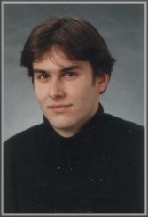

Lebenslauf |
|||
Matthias Franke |
Software-Entwickler |
 | |
Kontakt |
Tel. mobil: |
+49 171 / 650 93 97 |
|
Ausbildung |
|||
Schule |
01.08.1986 - 30.06.1995 |
Besuch der Stiftsschule St. Johann in Amöneburg |
|
Zivildienst |
01.07.1995 - 31.07.1996 |
Zivildienst im Pflege- und Fahrdienst des Konrad-Biesalski-Hauses, einem
Wohnheim für behinderte Studenten in Marburg |
|
Studium |
01.08.1996 - 31.08.2001 |
Studium "Politikwissenschaft" und "Neuere deutsche Literatur
und Medien" an der Philipps-Universität Marburg: |
|
Stipendium |
01.09.1997 - 31.08.1998 |
Studium an der Universität Wien: |
|
Tätigkeiten |
01.02.1999 - 30.07.1999 |
Betreuung eines körperbehinderten Software-Entwicklers der Deutschen Bank |
|
|
01.08.1999 - 30.06.2000 |
Tätigkeit als studentische Hilfskraft bei Prof. Dr. Thomas Anz im
Institut für Neuere deutsche Literatur und Medien der Philipps-Universität |
||
|
01.07.2000 - 31.12.2000 |
Mitarbeit in einem Projekt der Universitätsbibliothek Marburg zur Aktualisierung des OPAC (computergestützter Katalog) |
||
Praktika |
29.08.1994 - 09.09.1994 |
Praktikum im Forschungszentrum der DLR in Göttingen |
|
|
10.02.1997 - 07.03.1997 |
Praktikum im Kilian-Verlag in Marburg |
||
|
01.07.1999 - 30.07.1999 |
Praktikum bei "literaturkritik.de" |
||
Berufstätigkeit |
|||
|
01.09.2001 - 31.12.2003 |
Tätigkeit als Systemanalytiker für die Unternehmensberatung
PTA: |
||
|
Seit 01.01.2004 |
Tätigkeit als Software-Entwickler für die Unternehmensberatung Accenture: |
||
Software-Projekte |
01.12.2001 - 30.05.2002 |
Individualsoftware zur Planung von Projekteinsätzen |
|
|
01.06.2002 - 30.09.2002 |
Individualsoftware zur Auswertung von Marketingdaten |
||
|
01.10.2002 - 30.05.2003 |
Advanced Collection-Framework |
||
|
Seit 01.06.2003 |
Persistency-Framework |
||
|
Seit 01.01.2004 |
Implementierung einer Basel 2 Infrastruktur bei einer Großbank |
||
Kenntnisse |
Erwerb von Kenntnissen in bislang folgenden Bereichen:
|
||
Journalismus |
|||
|
Arbeitspoben sind unter |
|||
Tätigkeiten |
Seit 01.11.1994 |
Tätigkeit für das Fahrradmagazin "Pro Velo" |
|
|
01.09.1995 - 28.02.1998 |
freie Mitarbeit bei der "Oberhessischen Presse" |
||
|
01.09.1997 - 31.08.1998 |
in Wien freie Mitarbeit beim Management-Magazin "Report" (Baubranche) |
||
|
01.08.1999 - 30.06.2000 |
Redaktion und technische Betreuung der Monatszeitschrift "literaturkritik.de": |
||
|
Seit 01.11.1999 |
ständige freie Mitarbeit beim Stadtmagazin "Marburger Express" |
||
Aktivitäten |
|||
|
01.09.1993 - 31.08.1994 |
Teilnahme am Funkkolleg "Literarische Moderne" der Rundfunkanstalten
und des deutschen Instituts für Fernstudien der Universität
Tübingen |
||
|
Seit 15.11.1993 |
Konstruktion und Bau von Liegefahrrädern: |
||
|
1990 |
Teilnahme am Wettbewerb "Spurensuche" teil gemeinsam mit zwei
Schulfreunden |
||